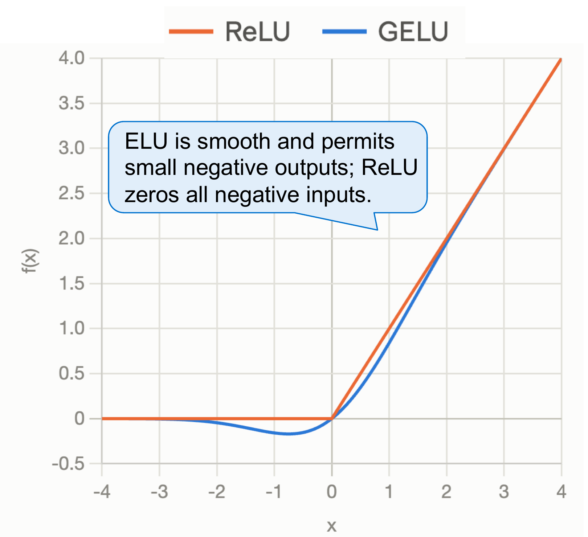
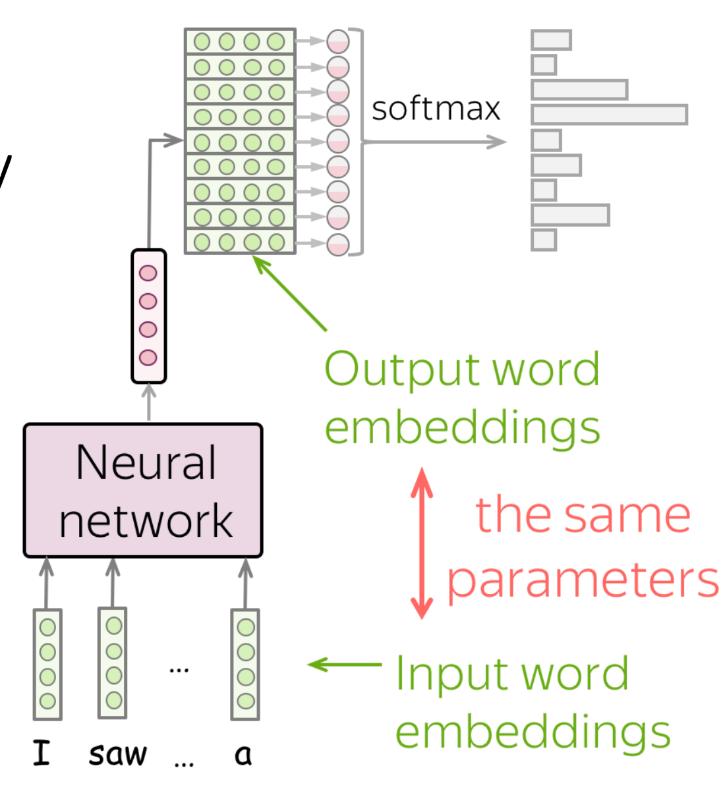
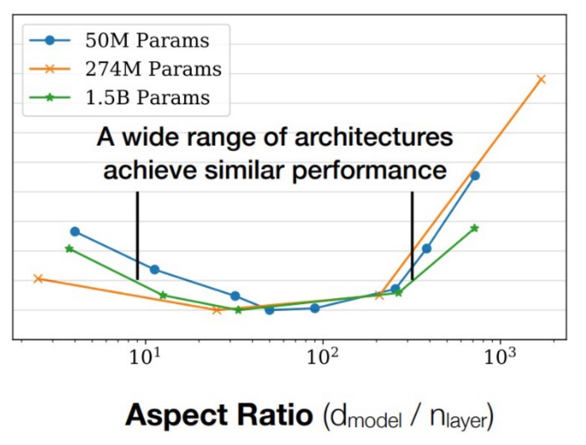

Session 13 ended with the runtime question on slide 13. This continuation starts with the RMSNorm evidence, then develops the deferred architecture choices: what a gated FFN computes, which dependencies a parallel block removes, and how a shared embedding learns through two roles. It then connects FFN width, attention-head dimensions, and depth/width choices to shape constraints and systems budgets.
- Scope
- Printed slides 14–50 of Transformer Language Models: RMSNorm results/recap, FFNs, block layout, embedding tying, architecture dimensions, and the architecture summary. Slides 14–49 develop the architecture material; slide 50 is the “Pre-training data” divider. Detailed corpus sources and data preparation begin after this cutoff. Slide numbers and PDF pages agree through slide 50 in this version.
- Time
- 5–7 minutes for the warm-up, then 65–85 minutes for §1–§5 and §8 if all bonus reading is included. The GELU details from slide 23, §5.2–§5.3, and practice E–F are optional. Allow 30–40 more for optional lab/code reading in §6–§7.
- By the end
- Interpret architecture ablations; implement a gated FFN; match projection budgets; trace serial/parallel dependencies; verify parameter sharing and its two gradient routes; audit FFN budgets. Optional bonus goals: distinguish head-width constraints from conventions and compare depth/width budgets.
- Assumes
- Handout #13 through the slide-13 runtime question. $[B,T,D]$ denotes batch, sequence length, and model width; $F$ is FFN hidden width and $V$ vocabulary size.
Slide-to-reading map (printed slide numbers)
| Slides | Reading |
|---|---|
| 14–16 | §1: evaluate RMSNorm evidence and recap the two normalization choices |
| 17–22, 24–29 | §2: activations, gates, and FFN budgets |
| 23 · Bonus | §2.1: GELU formula details — optional reading |
| 30–33 | §3: serial/parallel dependencies |
| 34–38 | §4: embedding tying, gradients, and memory |
| 39–43 | §5.1: FFN ratios and parameter-matched gated widths |
| 44–45 · Bonus | §5.2: head dimensions and output projection — optional reading |
| 46–48 · Bonus | §5.3: depth/width budgets and systems costs — optional reading |
| 49–50 | §5.4: architecture recap and transition to pre-training data |
Examples of model families illustrate combinations of choices, not a list to memorize. Detailed GQA, RoPE, MoE, and pre-training data preparation remain outside this reading.
Warm-up: shapes, sharing, and dataflow in 5–7 minutes
Use the prerequisites from #11–#13 before learning the new variants. Predict first, write your reasoning, then open an answer. The scalar puzzle deliberately omits normalization so only the dependency difference remains.
Shape extension of Spring 2025 Quiz 2 Q4.9, p. 8; dimensions changed for this warm-up.
A bias-free nn.Linear(6,12) receives input shape $[2,3,6]$. Give its output shape, PyTorch weight-storage shape, and parameter count. Would doubling the batch size double that parameter count?
Reveal the answer
The output is [2, 3, 12]; the stored weight is [12, 6]; there are 72 parameters. Doubling the batch changes the number of activations and operations, not the shared weight count. PyTorch’s weight stores output features first; mathematical row-vector notation would multiply by its transpose. This convention matters for tying in §4.1 and optional head projections in §5.2.
Original implementation puzzle extending the sharing idea in Spring 2025 Quiz 2 Q1.16, p. 4.
Assume torch and nn are imported. Predict the values of a, b, and c after this update. How many distinct Parameter objects do the three names reference?
a = nn.Parameter(torch.tensor([1., 2.]))
b = nn.Parameter(a.detach().clone())
c = a
with torch.no_grad():
a.add_(1)
Reveal the answer
a and c both contain [2, 3]; b still contains [1, 2]. There are two distinct Parameter objects: a is c is true and a is b is false. This isolates sharing from equal initial values. Real model weights must also be registered on modules so the optimizer can find them; these local variable names alone are not a model. See §4.1.
Scalar dataflow adaptation of Spring 2025 Quiz 2 Q4.5, p. 7. These toy branches are not an attention implementation.
Let $x=1$, $A(z)=2z$, and $M(z)=3z$. Compare two computations with identical branch functions:
- Serial: first $h=x+A(x)$, then $y=h+M(h)$.
- Parallel inputs: $y=x+A(x)+M(x)$.
Find both outputs. Is changing the FFN branch’s input merely a way to schedule the same computation?
Reveal the answer
Serial gives $h=3$ and $y=3+9=12$. Parallel gives $1+2+3=6$. The serial $M$ reads the updated $h$, while the parallel $M$ reads the original $x$. Thus the dependency change can change the function, even with identical branches. §3 restores normalization and attention. This toy arithmetic comparison does not establish a runtime speedup.
1From a runtime argument to empirical evidence
#13 §2.4 explains why small FLOP share can coexist with meaningful runtime cost. Slide 14 now supplies a measured comparison: the displayed baseline and RMSNorm runs have the same rounded parameter/operation totals, but different throughput and final loss. A rounded count cannot reveal kernel launches, reductions, memory traffic, or all small operation differences.
In slide 14’s table, throughput is 3.50 versus 3.68 steps/s and final loss is 1.838 versus 1.821 (baseline versus RMSNorm). Compute the throughput gain and the time saved for a fixed number of steps. What can you conclude about quality?
Reveal the answer
Throughput increases by $3.68/3.50-1\approx5.14\%$. For the same number of steps, time falls by $1-3.50/3.68\approx4.89\%$, assuming unchanged per-step batch work. The reported final loss is lower by 0.017 in this setting. That observation does not establish a universal quality gain or its statistical significance; the final-loss column alone does not supply uncertainty across runs.
The table is from Narang et al. (2021), credited on the slide (slide credit: Tatsu Hashimoto). The paper studies how architecture improvements transfer across implementations and applications, so its broader context is a reason to report the experimental setting.
Keep two separate choices from slides 15–16 in mind: placement (pre-norm versus post-norm) and statistics (LN versus RMSNorm). Pre-norm describes where normalization sits; it does not specify mean subtraction. RMSNorm controls a token’s scale using its second moment; it does not itself specify the residual layout. Model-family examples show common combinations, not a theorem that every architecture must use one combination.
2Gated FFNs: more projections, a fairer comparison
2.1 A smooth activation is not a random procedure
ReLU is $\max(0,z)$; GELU smoothly attenuates inputs and can produce small negative outputs. At $z=-1$, ReLU is 0 but GELU is approximately −0.158655. GELU's Gaussian interpretation does not make an ordinary GELU forward pass stochastic: identical inputs give identical outputs. Libraries may also offer a tanh approximation, so check the chosen implementation when comparing numbers.
Optional reading · GELU formula details (bonus slide 23)
Optional reading from bonus slide 23. Exact GELU is $\operatorname{GELU}(z)=z\Phi(z)$, where $\Phi$ is the standard normal cumulative distribution function:
$$\Phi(z)=\tfrac12\bigl(1+\operatorname{erf}(z/\sqrt2)\bigr).$$The CDF supplies a deterministic attenuation factor; evaluating GELU requires no random draw. At $z=-1$, $\Phi(-1)\approx0.158655$, giving the negative value quoted above. The exact CDF/error-function expression is bonus material; the core reading uses the curve’s qualitative behavior.
Corresponds to slide 23, marked “Bonus”.

Look near zero, then far to the left. The small negative lobe is easy to miss if you look only at large positive values, where the curves nearly coincide. The numeric value at $z=-1$ above makes that difference measurable. The plot describes a deterministic activation; it does not show random masks or a training-quality comparison.
Check the curve · Is GELU monotonic everywhere?
No. As the input moves from a very negative value toward the negative trough, the output moves down from near zero before rising again. The curve therefore has a region of negative slope. ReLU is nondecreasing, but its entire negative side is flat. A smooth curve need not be monotonic, and a nonzero negative output does not by itself guarantee a large gradient.
Adapted from Spring 2025 Quiz 2 Q4.2, p. 7.
Describe the negative-side behavior of ReLU and GELU, then explain why “GELU keeps all negative signals” and “GELU samples a random Gaussian mask” are both misleading.
Reveal the answer
GELU multiplies by a deterministic CDF value in $(0,1)$ for finite inputs; very negative values are strongly attenuated toward zero, rather than preserved unchanged. No Gaussian draw is needed. ReLU makes all negative activations exactly zero. Smoothness alone does not establish which activation trains a particular model best.
2.2 Trace both views of one token
Use row vectors for FFN equations. A bias-free dense FFN is $f(xW_1)W_2$, with $W_1\in\mathbb R^{D\times F}$ and $W_2\in\mathbb R^{F\times D}$. A gated FFN has two input projections:
$$g=xW_g,\quad u=xW_u,\quad z=f(g)\odot u,\quad y=zW_d.$$For SwiGLU, $f(g)=\operatorname{SiLU}(g)=g\operatorname{sigmoid}(g)$; for GeGLU, $f$ is GELU. SiLU names the nonlinearity; SwiGLU names the gated construction. Replacing GELU with SiLU in a two-matrix dense FFN does not add the second input projection or the elementwise gate. The multiplication is elementwise, not a dot product. Each hidden coordinate's response depends on two learned views of the same input token. All tokens use the same matrices.
| Hidden coordinate | Gate preactivation $g$ | Content $u$ | SiLU($g$) | Product |
|---|---|---|---|---|
| 0 | −1 | 2 | −0.268941 | −0.537883 |
| 1 | 0 | −3 | 0 | 0 |
| 2 | 1 | 4 | 0.731059 | 2.924234 |
These are the hidden products before the down-projection, not vocabulary probabilities. The gate can be negative, and SiLU(2) is about 1.762, so “volume knob” does not mean a probability constrained to $[0,1]$. Nor is the gate shared across tokens: matrices are shared, but their outputs depend on each token.
Optional depth · A zero gated output can still have a learning signal
Optional gradient exercise. Before the down-projection, one hidden coordinate is $z=f(g)u$. Write $\delta=\partial\ell/\partial z$ for the gradient arriving from later operations. The product rule gives two paths:
$$\frac{\partial\ell}{\partial g}=\delta\,u\,f'(g),$$ $$\frac{\partial\ell}{\partial u}=\delta\,f(g).$$In the middle coordinate of the worked trace, $g=0$ and $u=-3$. For SiLU, $f(0)=0$ and $f'(0)=1/2$. With incoming gradient $\delta=1$, what reaches the gate and content projections? What happens if an implementation uses F.silu(g).detach() * u?
Reveal the gradients and the implementation consequence
The gate preactivation receives −1.5, while the content preactivation receives 0 for this coordinate. A zero product therefore does not imply both branches stop learning. The projection-weight gradients additionally depend on the token input, through the usual linear-layer chain rule.
Detaching the activated gate preserves every forward value but removes its gradient path. In the isolated two-branch experiment, g.grad is then None, rather than a computed zero tensor; the content path remains connected. The lab compares the product-rule gradients with autograd and demonstrates the detach mutation. Checking loss values and tensor shapes alone would miss this error.
class SwiGLU(nn.Module):
def __init__(self, d, hidden):
super().__init__()
self.gate = nn.Linear(d, hidden, bias=False)
self.up = nn.Linear(d, hidden, bias=False)
self.down = nn.Linear(hidden, d, bias=False)
def forward(self, x):
return self.down(F.silu(self.gate(x)) * self.up(x))
Why are F.silu(gate(x) * up(x)) and F.silu(gate(x)) @ up(x).transpose(-1, -2) different from SwiGLU?
Reveal the answer
The first changes the nonlinearity's argument: generally $f(g\odot u)\ne f(g)\odot u$. The second makes a $[B,T,T]$ product from $[B,T,F]$ inputs, mixing tokens and discarding the intended hidden-feature axis. It may even create future dependence. Correct hidden shape stays $[B,T,F]$, and the down-projection returns $[B,T,D]$.
Optional theory · Multiplication creates interactions between learned features
Start with a simpler gate. Replace SiLU by the identity in one bias-free hidden coordinate. For column vectors $a,b,x$, its product is $z=(a^\top x)(b^\top x)$. Show that $z=x^\top Qx$, where:
$$Q=\tfrac12(ab^\top+ba^\top).$$With $a=(1,0)$ and $b=(0,1)$, can a single affine function $\alpha x_1+\beta x_2+c$ equal this product on every input?
Reveal the interaction
The scalar product equals its transpose, so symmetrizing $ab^\top$ leaves $x^\top Qx$ unchanged. In the example $z=x_1x_2$. At $(0,0),(1,0),(0,1)$, matching it forces $c=\alpha=\beta=0$; the affine function then fails at $(1,1)$, where the product is 1. One learned feature modulates the effect of another. This is an interaction within a token, not mixing between tokens.
Connect back to SwiGLU. Near zero, $\operatorname{SiLU}(t)=t/2+t^2/4+O(t^4)$. If $x$ is small and the weights are fixed, what is the leading term of $\operatorname{SiLU}(a^\top x)(b^\top x)$?
Reveal the local approximation and comparison
The leading term is a quadratic interaction. Away from zero, the full SiLU gate is not just a quadratic; its sigmoid factor changes with input. This derivation also assumes no biases. Ordinary nonlinear FFNs can represent interactions too: for example, the Taylor expansion of a GELU applied to a mixed linear feature already contains quadratic terms. The calculation explains a mechanism of gating, not a proof that gated FFNs are universally more expressive or train better at a fixed budget.
Original algebra/Taylor exercise. The architecture lab checks the quadratic identity, affine counterexample, and local SwiGLU limit.
2.3 Match parameters before judging the gate
Ignoring biases, dense FFN parameters are $2DF_{\rm dense}$; gated FFN parameters are $3DF_{\rm gated}$. Equating these gives:
$$F_{\rm gated}=\frac23F_{\rm dense};\qquad F_{\rm dense}=4D\Longrightarrow F_{\rm gated}=\frac83D.$$For $D=768$, dense width 3072 and gated width 2048 each use 4,718,592 parameters. Keeping gated width 3072 gives 7,077,888: 50% more FFN parameters. A quality gain in that comparison could partly be a budget gain. Forward projection arithmetic is also matched when the two different hidden widths obey this equation: approximately $2BT$ times the matrix parameter count, counting a multiply and add as two FLOPs. Activation operations and saved intermediates still differ.
Real implementations often round hidden widths to hardware-friendly multiples. Report the actual width and actual count; “roughly two thirds” is not an exact equality after rounding. PaLM’s bias-removal stability observation (noted on slide 18) is an empirical result in its setting, separate from the small parameter saving. Removing the dense biases saves only $F+D$ parameters: at $D=768,F=3072$, that is 3,840 versus 4.72 million matrix entries.
3Serial versus parallel: find the missing dependency
Write both formulations with explicit intermediates. $A$ is attention and $M$ the FFN:
$$\text{serial: } h=x+A(N_1(x)),\qquad y=h+M(N_2(h));$$ $$\text{parallel (shared norm): } n=N(x),\qquad y=x+A(n)+M(n).$$In serial, the FFN sees attention's update from this block. In parallel, both branches read the original normalized stream. Attention information can reach a later block's FFN, but there is no attention-to-FFN edge inside the current block. Changing this edge generally changes the function, even if the parameter values are identical.
3.1 A small counterexample to “same computation, new schedule”
To isolate the dependency, use $x=[1,2,3,4]$, affine-free LN with epsilon $10^{-6}$, $A(z)=[z_0,0,0,0]$, and $M(z)=z$. These toy branches are not an attention implementation. The same functions give different outputs; the lab computes both:
| Layout | Feature 0 | Feature 1 | Feature 2 | Feature 3 |
|---|---|---|---|---|
| Serial | −1.897815 | 1.897802 | 3.518725 | 5.139648 |
| Parallel | −1.683280 | 1.552787 | 3.447213 | 5.341640 |
Parallel inputs permit concatenating attention QKV and FFN input-projection weights into a larger projection of $n$, then splitting outputs. This does not remove the constituent matrix entries. It can reduce launches and improve utilization. Python statements running one after another are still sequential; actual fusion/concurrency requires a suitable implementation. Some parallel designs use separate branch norms, so a shared norm is an explicit choice here.
Adapted from Spring 2025 Quiz 2 Q4.5, p. 7.
Explain which edge is removed by a parallel block. Does it have half as many FFN/attention parameters? Must it improve quality or produce a 15% speedup on your laptop?
Reveal the answer
It removes the within-block attention-update → FFN-input edge. With equal branch widths, attention/FFN matrix counts remain the same; this shared-norm variant removes one normalization module. Neither quality nor a fixed speedup follows from the equation. PaLM §2 reports about 15% faster large-scale training in its implementation, a small quality degradation at 8B, and no degradation at 62B; the 540B conclusion was extrapolated. These are conditional observations, not a hardware-independent guarantee. The sample quiz’s written serial equation also omits the attention contribution in the residual term; use the two-line serial definition in §3.
Parallel branches also do not remove autoregressive token dependencies. A model still needs the sampled next token before predicting the one after it.
4Embedding tying is a constraint on learning
4.1 Shapes and actual sharing
An embedding matrix $E\in\mathbb R^{V\times D}$ maps token ID $i$ to row $E_i$. For final row-vector hidden state $h\in\mathbb R^D$, tied logits are $hE^\top\in\mathbb R^V$. In mathematical notation the output matrix is transposed; in PyTorch both nn.Embedding(V,D).weight and nn.Linear(D,V).weight are stored as $[V,D]$. Assign the same Parameter without transposing it.

Follow the two uses of the green parameters. At the input, a token ID selects a row. At the output, a hidden vector is compared with every vocabulary row to form logits. The red arrow denotes one shared parameter table; it does not make lookup and output projection the same operation, and it does not imply that softmax is removed.
Check the diagram · What changes if we copy the green table?
Two separate tables can initially give the same forward outputs as the shared table, yet receive different gradients and diverge after an optimizer step. The diagram’s sharing claim is therefore a claim about Parameter identity, not just matching colors, shapes, or values. The assertion below checks that identity; §4.2 then follows the two gradient routes into it.
self.embed = nn.Embedding(vocab, d)
self.head = nn.Linear(d, vocab, bias=False)
self.head.weight = self.embed.weight
# Tie during construction, before creating the optimizer.
assert self.head.weight is self.embed.weight
Copying values using copy_ or wrapping a detached clone in a new Parameter leaves two independently trainable objects. They can start equal and diverge on the first step. Use model.parameters() to enumerate the registered shared parameter once; do not concatenate overlapping module parameter lists into the optimizer. Replacing a parameter after constructing the optimizer can leave the optimizer tracking an obsolete object.
Tying is a modeling constraint, not merely compression: input and output roles must agree on one representation. Separate weights allow more independent choices. Tying also requires compatible hidden widths (or an extra adapter). A separate output bias is possible, but omitted here.
4.2 Why a token absent from the input can still update
For one prediction, let $p_j$ be the softmax probability of vocabulary item $j$ and $t$ its target ID. Holding $h$ fixed, the output-side derivative is:
$$\left.\frac{\partial\ell}{\partial E_j}\right|_{\rm output}=(p_j-\mathbf1[j=t])h.$$The embedding-lookup route contributes only to rows looked up as inputs. The output route has a coefficient for every vocabulary row under full softmax, including rows absent from the input. Under tying, autograd sums both routes into the same gradient buffer:
$$\nabla_E\ell=\nabla_E\ell\big|_{\rm input}+\nabla_E\ell\big|_{\rm output}.$$“Dense signal” is not a guarantee every row has a nonzero or helpful update: zero hidden states, numerical underflow, cancellation, or modified objectives can change that. In a single ordinary full-softmax prediction with nonzero $h$, an absent, non-target word gets coefficient $p_j>0$. Holding $h$ fixed, the output-side gradient descent update lowers that word’s logit. With multiple predictions or a changing hidden state, individual logit changes need not all have this sign. It learns from being an alternative prediction, not from being observed as input.
A five-token toy model reads IDs [0,0] and predicts targets [1,2]. Row 4 is neither read nor a target. Which gradient routes reach row 4? How would you verify that tying sums the routes?
Reveal the answer
Lookup contributes zero for row 4; the full-softmax output route generally contributes a nonzero gradient. Make two independent matrices initialized identically, compute their two gradients, and compare their sum with the tied model's gradient. The supplied lab performs exactly this comparison at the same initial weights and on the same loss.
Optional theory · Can two useful gradient routes cancel?
A constraint puzzle. Model two roles by the toy loss $L(a,b)=(a-1)^2+(b+1)^2$. First optimize two independent scalars. Then tie them by setting $a=b=w$. Find the best loss in each case. At $w=0$, do the two route gradients vanish separately?
Reveal the optima and cancellation
Untied, $a=1,b=-1$ achieves loss 0. Tied:
$$L(w,w)=2w^2+2,\qquad \frac{dL}{dw}=4w.$$The tied optimum is $w=0$ with loss 2. There the role derivatives are $2(w-1)=-2$ and $2(w+1)=2$: each is nonzero, but they sum to zero in the shared parameter. Their preferred updates conflict. A zero shared gradient therefore need not mean neither role supplies a signal.
What does this imply about embedding tying? If the untied model can choose any input/output matrices and the tied model requires them to be equal, can tying lower the globally minimal training loss for the same objective? Does that settle validation performance?
Reveal the function-class argument
Every tied parameter setting is available to the otherwise identical untied model by choosing equal matrices. The tied feasible set is a subset, so its global minimum training loss cannot be lower (equivalently, compare infima if minima are not attained). This assumes the same unregularized loss and no changes to the other constraints. It says nothing about the loss reached by a finite optimizer run. Sharing can change optimization and act as an inductive bias, so validation performance must be measured. The scalar puzzle demonstrates possible gradient conflict; it does not claim real input and output embeddings always disagree.
Original constrained-optimization exercise; the lab verifies both optima and cancellation of the two role gradients.
4.3 Count savings without promising fewer logits
Untied input/output matrices contain $2VD$ parameters; tied matrices contain $VD$, saving $VD$. For $V=32{,}000,D=768$, this saves 24,576,000 parameters, or 46.875 MiB of two-byte weights. Under an illustrative training layout with a two-byte weight, two-byte gradient, and two float32 Adam moments, saving 12 bytes per parameter gives 281.25 MiB. A float32 master copy would add another 93.75 MiB. Actual optimizer, sharding, and dtype policies determine the real memory.
The logits still require a projection into $V$ classes. Tying does not remove the $[B,T,V]$ output, vocabulary softmax, or their arithmetic. The saved parameter fraction depends on depth and width of the rest of the model. Press & Wolf (2017) motivate sharing and study its language-modeling benefits; equal roles are an inductive bias, not a mathematical necessity for every model.
Adapted from Spring 2025 Quiz 2 Q1.16, p. 4.
A model has 100 million untied parameters, including two matrices with $V=20{,}000,D=500$. How many remain after tying? Does the cost of computing all vocabulary logits halve?
Reveal the answer
Each matrix has 10 million parameters. Saving one leaves 90 million, a 10% whole-model reduction and a 50% reduction for this pair. The output projection still computes the same number of logits; its arithmetic does not halve.
Optional depth · Why does tying often save a smaller fraction in larger models?
Optional budget exercise. Let $L$ be the number of decoder blocks. Use ordinary MHA with attention width $A=D$ and the parameter-matched FFN approximation developed in §5.3, with block matrices $N_{\rm blocks}\approx12LD^2$. Include two untied vocabulary matrices and omit the smaller components. Tying removes $VD$ from the untied baseline, so:
$$f_{\rm saved}\approx\frac{VD}{12LD^2+2VD}$$ $$=\frac{V}{12LD+2V}.$$At fixed vocabulary size $V$, increasing depth $L$ or width $D$ lowers this fraction, even though increasing $D$ increases the absolute number of shared parameters. For example, with $V=50{,}000$:
- $L=12,D=768$: 38.4 million parameters removed, about 23.74% of the untied baseline.
- $L=48,D=1536$: 76.8 million parameters removed, about 5.08% of the untied baseline.
These are approximate accounting examples, not claims about which configurations train best. Changing vocabulary size or the attention/FFN budget changes the comparison.
Check the denominator · A model has 124M parameters after tying and avoids a 38M matrix. What percentage was removed?
The untied model would have 162M parameters, so the reduction from that baseline is $38/162\approx23.46\%$. The ratio $38/124\approx30.65\%$ instead measures the avoided parameters relative to the remaining tied model. Both ratios can be reported, but they answer different questions. Always identify the baseline when reading a “percentage saved” claim.
5Dimensions: conventions, constraints, and budgets
Slides 39–49 ask how to choose the sizes inside the architecture. Separate three kinds of statement: a shape constraint makes an operation legal, a budget equation counts its cost, and an empirical convention describes choices that have worked. Only the first is mandatory for the mathematics; a particular software interface may impose additional restrictions.
5.1 FFN ratios are budget choices, not shape requirements
The familiar dense choice $F=4D$ gives $2DF=8D^2$ matrix parameters per FFN. A bias-free gated FFN with $F=8D/3$ has the same count, as derived in §2.3. There is no requirement that the intermediate width be exactly either value: the down-projection can map any positive hidden width back to $D$. Hardware-friendly rounding and quality/compute tradeoffs help determine the actual setting.
The FFN sweeps on slides 41 and 49 suggest a broad useful region in their experimental setting, not a universally optimal multiplier. When a sweep holds non-embedding parameter count fixed, changing $F/D$ also requires changing other dimensions: it is not a comparison that merely adds hidden units to an otherwise identical model. Slides 42–43 show how the gated default follows from matching the projection budget. Slide 49 also summarizes a wider spread of actual gated ratios; rounding and different allocations of capacity can move a model away from exactly $8/3$.
At $D=1024$, a dense FFN uses $F=4096$. For a gated FFN, start from $F=8D/3$ and round up to a multiple of 256. What width results? Compare the bias-free matrix counts and their percentage difference.
Reveal the answer
The nominal gated width is about 2730.67; rounding up gives 2816, or $F/D=2.75$. Its matrix count is 8,650,752 (three matrices with dimensions 1024 by 2816), versus 8,388,608 for the dense FFN (two matrices with dimensions 1024 by 4096). This is 3.125% more. Rounding can help an implementation while breaking exact budget equality; report the actual dimensions and counts.
5.2 Optional reading · Head count need not divide the residual width
For this subsection use ordinary MHA, with $H$ heads and the same per-head width $d_h$ for queries, keys, and values. Define the total attention width $A=H d_h$. We may choose $A$ independently of residual width $D$:
$$W_Q,W_K,W_V\in\mathbb R^{D\times A}.$$ $$W_O\in\mathbb R^{A\times D}.$$| Step | Shape |
|---|---|
| Residual input | $[B,T,D]$ |
| Each projected Q/K/V | $[B,T,A]$ |
| Each split Q/K/V | $[B,H,T,d_h]$ |
| Attention scores | $[B,H,T,T]$, scaled by $1/\sqrt{d_h}$ |
| Concatenated head outputs | $[B,T,A]$ |
| After output projection | $[B,T,D]$, ready for residual addition |
The widespread convention $A=D$ gives $d_h=D/H$, so that convention requires divisibility. The general construction requires $A=H d_h$, not $D=H d_h$. Queries and keys must have matching feature widths for their dot products; values can even use a different width if the concatenation/output projection is adjusted. We keep their widths equal here to isolate one choice.
This flexibility has a cost: the four bias-free projection matrices have $4DA$ parameters rather than necessarily $4D^2$. At fixed $A$, increasing $H$ shrinks $d_h$ without changing this projection count, but a materialized score tensor still has $BH T^2$ entries. At fixed $H$, increasing $d_h$ increases $A$, projection cost, and ordinary MHA KV-cache width. Equal parameter counts alone do not establish equal runtime or intermediate memory.
Let $D=10,H=3,d_h=4$. Find $A$, the output-projection weight shape in mathematical and PyTorch notation, and the total projection parameter count. Why is simply deleting nanoGPT’s divisibility assertion insufficient?
Reveal the answer
$A=12$. Mathematically $W_O$ is $[12,10]$; nn.Linear(12,10,bias=False).weight is stored as $[10,12]$. The four projections have $4\cdot10\cdot12=480$ parameters. nanoGPT assumes its projected attention width equals $D$ in both its projections and reshapes. Deleting its assertion does not change those assumptions. The optional lab explicitly projects to $A$, splits by $d_h$, and projects back to $D$.
5.3 Optional reading · Equal block parameters can hide different systems costs
Let $L$ be the number of decoder blocks. Assume standard MHA with $A=D$ and a dense $F=4D$ FFN, and ignore biases and norms. Attention contributes $4D^2$ parameters and the FFN $8D^2$, so:
$$N_{\rm blocks}\approx12LD^2.$$The same leading count holds for a budget-matched gated FFN. Vocabulary weights, positional parameters, and final normalization are extra. In particular, changing $D$ changes the $VD$ embedding count, so equal block counts do not imply equal total model counts.
| Illustrative decoder | $L$ | $D$ | $D/L$ | Block matrix parameters |
|---|---|---|---|---|
| Shallower, wider | 12 | 768 | 64 | 84,934,656 |
| Deeper, narrower | 48 | 384 | 8 | 84,934,656 |
These are counting examples, not recommended configurations. Width here is the hidden feature dimension, not context length. The deeper model has four times as many sequential block dependencies and smaller matrix operations. The wider model may offer more useful parallel work within a block; actual utilization depends on shapes and hardware. Pipeline parallelism can overlap work from different microbatches, but does not remove a single sequence’s layer dependencies.
Recall #12’s ordinary MHA KV-cache count, $2BLTDs$ bytes for $s$ bytes per cache element. With $B,T,s$ fixed, the two example models have cache sizes proportional to $12\cdot768$ and $48\cdot384$: the deeper one needs twice as much cache. Their full-sequence attention score/value products also scale with $LD$ at fixed $B,T$, while the main projection/FFN arithmetic scales with $LD^2$. Even their total arithmetic need not be equal.
A teammate says the two models above must train and decode equally fast because their block parameter counts match. Identify two costs that differ. What must be held fixed in a fair timing comparison?
Reveal the answer
Layer dependencies differ by a factor of four; ordinary MHA KV-cache size and the leading attention score/value-product arithmetic differ by a factor of two. Kernel sizes, activation storage, and embedding counts also differ. Compare the same workload—batch, context/prompt and generated lengths, dtype, device, kernels, and execution mode—and record memory and validation quality as well as latency/throughput. Equal block matrix parameters specify only one budget.

Read the basin, not just one preferred ratio. Each curve compares shapes at approximately fixed non-embedding parameter count. Slides 46–49 highlight ratios around 100–200, but the plotted basin and the paper’s discussion are broader. The vertical axis in this slide crop has no numerical labels: use it to interpret the qualitative trend, not to read exact losses. These experiments motivate a range of candidate shapes; they do not prove a universal optimum or predict which candidate runs fastest on your hardware.
5.4 A configuration audit before training
The architecture recap on slide 49 combine conventions with choices for which consensus is weaker. Record the actual FFN width, head count and width, residual width, depth, normalization, activation, layout, and tying setting. Derive the shapes and count the real Parameters, then measure quality, throughput, and memory under the stated budget. Copying a successful configuration is a starting hypothesis; a legal shape, a familiar ratio, and an empirical quality result answer different questions.
6Optional lab: checks before training
python 14_architecture_checks.py with PyTorch; it needs no data or model download. It checks the fixed gate trace, shapes and gradients, parameter budgets, fused projections, serial/parallel outputs, copied versus shared Parameters, the two gradient routes, attention with independently chosen head width, the optional gate-gradient/tying-fraction examples, quadratic feature interactions, and conflicting shared gradients.These are component checks, not evidence of better language-model quality or throughput. Make each deliberate mutation separately, observe the failed assertion, and restore it before the next experiment. Session 13’s normalization checks remain in #13’s optional lab.
| Experiment | Change | Expected observation |
|---|---|---|
| Change the gate | In SwiGLU.forward, replace F.silu(self.gate(x)) * self.up(x) with F.silu(self.gate(x) * self.up(x)) | The fused-reference equality fails. The separate fixed gate trace still passes until you change its formula too. |
| Confuse equal values with sharing | Assign a detached clone to the output head | Values initially agree; identity and unique parameter-count checks fail. |
7Optional code reading: revisit nanoGPT with new questions
3adf61e154c3fe3fca428ad6bc3818b27a3b8291, the same version used in #11–#12. Inspect Block.forward, MLP, GPT.__init__, and the final normalization in GPT.forward. The local lab runs independently of this optional internet reading.7.1 What does the second normalization read?
model.py · Block.forward · verbatim excerpt
x = x + self.attn(self.ln_1(x))
x = x + self.mlp(self.ln_2(x))
The second line reads the updated $x$: this is the serial pre-norm layout in §3. Find the final normalization before lm_head; pre-norm does not imply an unnormalized output stream. Then inspect the MLP's two linear layers and GELU: it is a dense FFN, not a gated one.
Replace those two lines with the following. Which dependency changes, and why should shape agreement not be mistaken for numerical equivalence?
n = self.ln_1(x)
x = x + self.attn(n) + self.mlp(n)
Reveal the answer
The FFN now sees normalized original input instead of normalized attention-updated input. Both versions return $[B,T,D]$, but generally different values, as §3.1's counterexample shows. This edit leaves ln_2 unused: remove it for a clean shared-norm variant. Equal output shape proves only interface compatibility. CPU execution of these lines does not automatically fuse their projections.
7.2 Find the assignment that constrains the optimizer
model.py · GPT.__init__ · excerpt, trailing source comment omitted
self.transformer.wte.weight = self.lm_head.weight
The assignment direction differs from §4's teaching model, but both modules end up referencing one Parameter. In a separate checkout, replace the assignment's right-hand side with nn.Parameter(self.lm_head.weight.detach().clone()). Use GPTConfig(vocab_size=5, n_embd=12, n_head=3, n_layer=1, block_size=4, dropout=0.0, bias=False). The untied version has exactly 60 more parameters, and the identity assertion fails. Count with sum(p.numel() for p in model.parameters()), keeping every other setting fixed.
There is an initialization trap: the clone initially has equal values, but nanoGPT later calls self.apply(self._init_weights). Its two separate Parameters are then initialized independently, so they are generally unequal when construction finishes. To isolate “equal values, different objects,” clone after constructing the model and before creating its optimizer. The local lab does this with $V=5,D=3$: 15 versus 30 unique parameters.
Further edit: replace its dense FFN with the lab's bias-free SwiGLU. At $D=12$, compare hidden widths 48 (dense) and 32 (gated); both have 1,152 matrix entries when the dense biases are off. Keep causal attention intact and repeat prefix invariance after the substitution. This tests correctness of integration, not whether the new activation improves training.
nanoGPT excerpts: Copyright (c) 2022 Andrej Karpathy, MIT License. License and permission notice. The proposed edits are original exercises.
7.3 Find an implementation assumption about heads
Optional code extension of bonus slides 44–45 and §5.2.
model.py · CausalSelfAttention.__init__ · verbatim excerpt
assert config.n_embd % config.n_head == 0
Locate the QKV output width and the reshape that computes head width from n_embd // n_head. Explain why removing this assertion alone cannot implement §5.2’s $D=10,H=3,d_h=4$ example. Then read FlexibleAttention in the local lab: its projections use the independent attention width $A$, and its output projection maps $A$ back to $D$. In the Q/K/V reshape, replace self.head_dim with x.size(-1) // self.heads and confirm that the reshape fails.
8Practice: diagnose the claim, then design the check
Questions A–D cover the core reading. E–F are optional practice for bonus slides 44–48 (§5.2–§5.3).
A dense FFN with $F=4D$ is replaced with a gated FFN of the same hidden width. List one budget change and two observations needed to evaluate the result.
Reveal the answer
FFN matrix parameters and projection arithmetic rise by 50%. Compare a gated width near $8D/3$ under the stated budget, then measure validation loss and throughput/peak memory with controlled data and training settings. Multiple seeds help distinguish a reproducible effect from one run. Matching hidden width is not matching parameters.
Does a parallel block's FFN receive this block's attention result? Can it still transform information gathered by earlier attention blocks?
Reveal the answer
It does not receive the current block's attention result. Its input residual stream can already contain contextual information from preceding blocks. Within-layer independence does not mean the FFN sees only raw token embeddings at every depth.
A vocabulary item never appears as an input in this batch. Is its tied row necessarily unchanged after a step? Does sharing guarantee a better rare-word representation?
Reveal the answer
No: the full-softmax output route can update it. Sharing exposes the row to both roles, but signal availability alone does not guarantee representation quality. Check both gradient routes at identical initial weights, as in §4.2 and the lab.
Your changes remove FFN biases, switch to RMSNorm, and tie embeddings. Which saves a $VD$ matrix? Which changes normalization statistics? What evidence supports an end-to-end speed claim?
Reveal the answer
Tying saves the vocabulary-sized matrix; RMSNorm replaces centered variance with a second moment. Bias removal saves vector parameters. Profile and time the full intended workload with the same batch/context, dtype, device, compiler, and synchronization; compare validation quality and memory too. Parameter counts alone do not establish elapsed-time savings.
Is this a mathematical requirement of MHA, or a requirement of an implementation that sets $A=D$? Which dimension must the concatenated heads match before the residual addition?
Reveal the answer
It is a requirement of the $A=D$ equal-width-head convention and of interfaces built around it. The concatenated width can be $A=H d_h$; after an $A$-to-$D$ output projection, the output must match residual width $D$.
A proposed model has $D/L=128$. What does this ratio fail to tell you about its size, legality, and expected quality?
Reveal the answer
The ratio alone does not determine $L$ or $D$, FFN and attention widths, total parameters, head reshapes, hardware efficiency, or validation quality. It resembles examples in the slides, but architecture legality requires shape checks and a quality claim requires a controlled experiment. Avoid interpreting a broad empirical basin as a unique optimum.